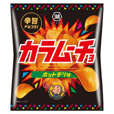
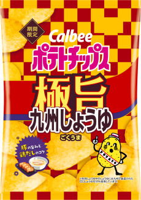
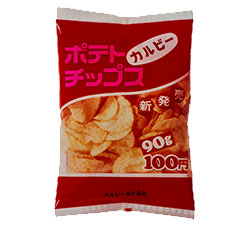

好きなポテチ
-

- NO.1 匿名
- カラムーチョ！！！！！！
私はポテトチップスの中で一番"カラムーチョ"が好きです。
カラムーチョの少し辛い味付けが最高にコーラに合う！！！
カラムーチョこそ至高そしてお菓子界の神です！！！！！！ - NO.2 ポテチで育ったもの
- しあわせバターーーーーー！！！！！！！バターーーーーー！！！！！！！
私は、中学生時代このしあわせバターにどはまりしていました。
その理由として、甘じょっぱい味付けが私の好みど真ん中でした。
これほど私の味覚に合ったお菓子があるのかとビックリしました！？
これが本当の"しあわせ"太りです。

新しいポテチ
鶏だしのコクを加えることで、極旨(ごくうま)な味わいをお楽しみいただけます。
たまり醤油と生揚（きあげ）醤油にマヨネーズをブレンドしたコクとまろやかさがくせになる味わい！
初代ポテチ
「100円でカルビーポテトチップスは買えますが・・・」のCMが大好評
強く印象に残る商品名で長くお客様に愛される商品に育てたいとの想いから
「コンソメパンチ」と名付けた